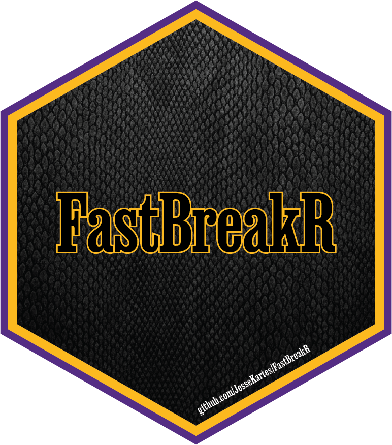

FastBreakR is a fast and efficient R package for working with NBA data. With a robust set of core tools, the package is fully functional and continually evolving, with new features regularly added to enhance its capabilities.
Installation
You can install the development version of FastBreakR from GitHub with:
# install.packages("pak")
pak::pak("JesseKartes/FastBreakR")Core Features
- Speed and Efficiency: Optimized to process large data requests rapidly, FastBreakR includes built-in mechanisms like rate-limiting pauses to ensure smooth operation while adhering to NBA API constraints.
- Data Consolidation: Seamlessly merges multiple statistical categories into a single, unified dataset while automatically eliminating duplicate columns, ensuring a cleaner and more organized output for analysis.
- Consistent and Tidy Naming: Column names are cleaned and standardized while staying consistent with NBA naming conventions.
- User-Friendly Design: Functions are intuitive, making it easy to fetch and manipulate data.
Example
This is a basic example which shows you how to get scores for the 2024-2025 season:
library(FastBreakR)
scores <- nba_scores(2025, season_type = "Regular Season")
#> Fetching season 2025 (1/1)Documentation
Full Documentation: https://jessekartes.github.io/FastBreakR/reference/index.html
For any questions, suggestions, or issues, feel free to open an issue on GitHub.